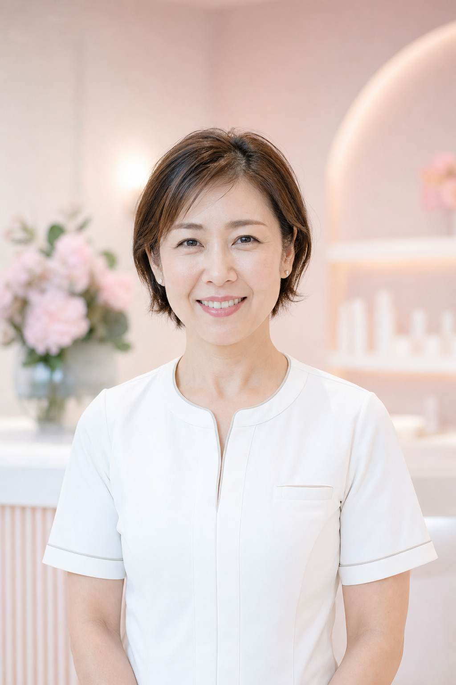

40代に入ってから、ふと気づいてしまった。
まだ若いつもりだったのに、
頬と口もとが、もたつき始めてる……

体重は変わっていないのに、
フェイスラインだけ重い気がする。
美顔器ユーザーの多くが
「効果を感じられなかった」と回答。
購入の決め手は「効果」なのに、
買う前にいちばん不安なのも
「効果があるかわからない」こと。
（※20〜60代女性300名対象・美顔器利用者調査より）

わたしもまさにそうでした。
2台買って、2台とも途中でやめてしまった。
でもその理由を知ったとき、
考え方ががらっと変わりました。
原因は"お肌の表面"
じゃなかった。
わたし、ずっと勘違いしてた。
たるみは肌表面の問題じゃない。
土台の筋膜が、ゆるんでいたんだって。

※肌断面図のイメージです
そのカギを握るのが
「SMAS筋膜」という層。
ここがゆるむと、頬が落ち、
フェイスラインがぼやけていく。
どんなに高いクリームを塗っても、
筋膜までは届いていなかった。
たるみは、
一度進むと戻せない。
これを知ったとき、正直ぞっとした。
ハイフやサーマクールといった
医療機器を使った施術でも、
一度進行したたるみを元に戻すのは
とても難しいらしい。

調べれば調べるほど、
早めの予防しかないってわかった。
たるみケアでいちばん大切なのは、予防。
気づいたときには進行していることが多いから、
今のタイミングなら、まだ間に合う。
そう思えたことが、
わたしの転機でした。
筋膜は"タンパク質"。
熱でキュッと引き締まる。
SMAS筋膜は筋肉、つまりタンパク質。
タンパク質は熱を加えると
キュッと引き締まる性質がある。
まるでシルクのシワがなくなるようにね。
だからSMAS筋膜にしっかり熱を届ければ、
土台からふわっと引き上がるってこと。

※肌断面図のイメージです
問題は
「奥まで熱が届くか」
ここが落とし穴でした。
SMAS筋膜は肌の"奥"にあります。
表面がぽかぽかしているだけじゃ
届かない＝意味がない。

市販の家庭用美顔器は出力が足りず、
"ラジオ波"でも当てるとぬる〜いだけ……

※画像はイメージです
じゃあサロンに通う？
……高い。そして続かない。
本当に奥まで届く熱を出せるのは、
クリニックやサロンの業務用マシン。

※画像はイメージです
効果は高いけど、
お高いし、通い続けないといけない……
「高いサロン通い」か。
今までは、この二択しかなかった。

じゃあ、どの美顔器を選べばいいの？
美顔器には種類があります。
EMS、RF、EP、LED……
調べるほどに、迷ってしまって。
でも、たるみ予防のカギは
「どこまで届くか」。
そう考えると、答えはシンプルでした。

たるみに本気で向き合うなら、RFは必須。
これが、調べ尽くしたわたしの結論でした。
でも……RFの美顔器って、びっくりするくらい高い。
RF＋EP＋LEDだと、15〜25万円が相場……
正直、手が出ないなって……
その二択を、
終わらせる方法がありました。
そんなとき、見つけたのがこれ。
"業務用レベルの深部加温"を、
おうちで叶える美顔器。
ミニキュアエクセレント

なぜ家庭用なのに
業務用レベルなの？
秘密は"引き算"の設計。
多機能機はいちばん弱い機能に
出力を合わせるから、
結局どれも中途半端になっちゃう。

※一般的な市販美顔器の主な機能一覧
ミニキュアは
RFとEPに絞って、出力を一点集中。
独自波形「DPP」で高出力×高速。

DPP（Dermal Penetrate Pulse）──
"真皮まで浸透するパルス"という名前のとおり、
安定したラジオ波を高速で連打。

肌深部の細胞どうしを振動させて、
内側からじんわり摩擦熱を起こすしくみ。
肌深部 38℃。
業務用レベルのぬくもり。
だから小さくても、
肌の深部を約38℃まで加温できちゃう。

この38℃がカギ。
熱が加わるとヒートショックプロテインが発現──
傷ついたお肌を修復して、
質の高いコラーゲンを生み出すタンパク質です。

つまり、ただ温めるだけじゃない。
熱そのものが
"美肌成分の工場"になる。
アイロンのように
"土台"からふわっと引き上げる。
さらに──
アイロンでシャツのシワを伸ばすように、
ミニキュアをお肌にしっかり押し当てる。

するとRFの熱が
お肌の土台＝SMAS筋膜に直接届いて、
ハリと引き上げを実感できる。
これが「サーマプレス方式」。
表面をなでるだけの美顔器とは、
アプローチする"層"がまるでちがう。
※ひきしめ・ハリは物理的効果および温感による ※画像はイメージ
熱のうれしいおまけ、
まだありました。
RFで深部があたたまると、血管がふわっと拡張。
老廃物が流れて、めぐりが一気によくなる。

この"めぐりのいいお肌"に、もうひと押し。
EP（エレクトロポレーション）が、
ふつうは入りにくい
高分子の美容成分まで届けてくれます。
浸透力はイオン導入の約7倍。

※角質層まで
"温める × めぐらせる × 届ける"
三拍子そろった合わせ技。
届ける"中身"まで
専用設計。
届ける力があっても、
中身がなければ意味がない。
だからミニキュアは、
エイジングケアに着目した
美容液まで自分たちでつくっているそう。

家庭用化粧品メーカーではなく、
業務用美顔器のメーカーが設計した美容液。
"届ける機器"を知り尽くしているから、
"届けられる成分"で組める。

どれも、塗るだけでは奥に届かない成分ばかり。
EPがひらいた通り道を通って、はじめて届く。
"届ける力"と"届く中身"、
両方そろってはじめて完成する設計なんだって。

プロも認める"本物の熱"。
プロのサロンでも導入されていて、
先生たちからも
「業務用と同じ熱」って評価してるみたい。
タレントの優木まおみさんも愛用。
わたしも3ヶ月使ってみて、フェイスラインが変わってきた気がしてる。

みんなの声
実際に使っている方の投稿を見て、
わたしも背中を押されました。


使い方はとってもかんたん。
え、なんでこんなに安いの？
RF＋EP＋LEDで15〜25万が相場なのに、
ミニキュアは35,350円。
最初は「え、なにか裏があるの？」って疑った。
でも調べてみたら、
納得の理由がちゃんとありました。

自社でOEM工場を持っているメーカーさん。
有名美容ブランドの製品をつくってきた、
いわば「頼まれる側」の会社。
その会社が自社ブランドとして
直接届けているから、
中間コストがゼロ。
削ったコストを、ぜんぶ品質に投入できる。
だからこのお値段で出せるみたい。なるほどね。
ひとつだけ、
お約束があります。
ミニキュアは本体だけの販売ではなく、
専用美容液の3ヶ月定期がセット。
最初は「定期かぁ……」と思ったけど、
理由を聞いたら、なるほどなって。
何を届けるかで、ケアの質が決まる。
美容液なしで機器だけ使うのは、
正直もったいないって。
……たしかに、それはそう。
機器と美容液、
セットで使うことに意味がある。
3ヶ月の総コストは54,910円。
月あたり約18,000円で、
SMAS筋膜へのアプローチが
毎日おうちでできる計算です。
2回目（美容液）：¥9,780
3回目（美容液）：¥9,780
3ヶ月合計：¥54,910 ※3回目以降はいつでも解約できます
諦めなくて、
ほんとうによかった。
サロン級のケアが、おうちで。
週1〜2回・1回約8分でいい。
しかもつくっているのは
業務用美顔器のメーカーさん。
保証もついていて安心。

3台買って、2台はクローゼットの奥。
でもミニキュアだけは、
今も洗面台に置いてあります。
半年前の自分に
「早く買いなよ」って言いたい。
ほんとうに、心からそう思う。
＼ 今すぐチェック ／
73%OFF
¥133,100 →
¥35,350（税込）
送料無料・メーカー保証1年つき
※ 美顔器本体＋ヒト幹細胞美容液セット
※ 2回目以降は美容液のみ ¥9,780/月
※個人の感想であり効果を保証するものではありません
※引き上げ・ひきしめは物理的効果および温感によるものです
※効果には個人差があります
※浸透は角質層まで
※エイジングケアとは年齢に応じたお手入れのことです